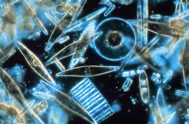
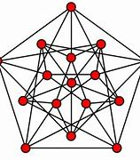
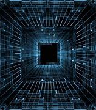

Summer of Science Projects 2019

Understanding the Role of Diatoms in Energy Conversion and Storage
Sagar explores how an algae which is actually nothing but food to various marine life can bring revolutionary changes in this energy sector through the concept of biomaterials.
Sagar explores how an algae which is actually nothing but food to various marine life can bring revolutionary changes in this energy sector through the concept of biomaterials.

Introduction to Graph Theory
The origin of graph theory is basically by the problem of bridges "Seven bridges of Konigsberg". Now-a-days this topic has great applications in Mathematics as well as in Computer Science. Dipanshu Sharma studies the basic introduction of Graph Theory, its application and uses. You can find a precise report of his learnings here.
The origin of graph theory is basically by the problem of bridges "Seven bridges of Konigsberg". Now-a-days this topic has great applications in Mathematics as well as in Computer Science. Dipanshu Sharma studies the basic introduction of Graph Theory, its application and uses. You can find a precise report of his learnings here.

Data Structures and Algorithms
Shalabh Gupta studies various algorithms and data structures used to implement them so as to excel in competitive programming.
Shalabh Gupta studies various algorithms and data structures used to implement them so as to excel in competitive programming.
Stock Market Analysis
How to investigate about a company's potential and more importantly what to look into the stocks we are opting to invest in. So lets go with Hemant Kumar and find out various aspects starting from describing financial statements to finally knowing about choosing right stocks.


How to investigate about a company's potential and more importantly what to look into the stocks we are opting to invest in. So lets go with Hemant Kumar and find out various aspects starting from describing financial statements to finally knowing about choosing right stocks.
Thremodynamics and Entropy
Shrinivas Prasad Kulkarni through this report shows that there is another point of view to see this world, and that's Thermodynamics, through which the world looks beautiful, yet familiar.
Shrinivas Prasad Kulkarni through this report shows that there is another point of view to see this world, and that's Thermodynamics, through which the world looks beautiful, yet familiar.